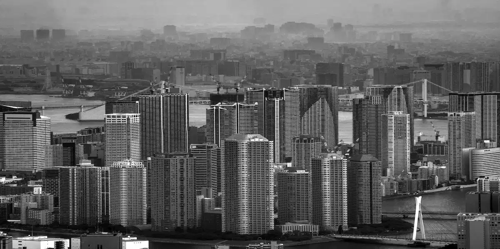
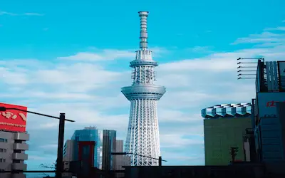

Welcome to Tokyo
Where ancient traditions meet futuristic innovation
About Tokyo
Tokyo, Japan's bustling capital, is a dazzling blend of ultramodern and traditional culture. From neon-lit skyscrapers to historic temples, the city offers an unparalleled urban experience that captivates millions of visitors each year.
The Greater Tokyo Area is the most populous metropolitan area in the world, with over 37 million residents. The city is renowned for its efficient public transportation, world-class cuisine, and vibrant pop culture that has influenced the world.
Tokyo will host the 2026 Asian Games, continuing its legacy as a global hub for sports, culture, and innovation.
Top Attractions
Sensoji Temple
Tokyo's oldest temple, located in Asakusa. The iconic Kaminarimon Gate and Nakamise shopping street draw millions of visitors annually.

Shibuya Crossing
Often called the busiest intersection in the world, this iconic scramble crossing represents the energy and pulse of modern Tokyo.
Tokyo Tower
Standing at 333 meters, this Eiffel Tower-inspired structure offers breathtaking panoramic views of the city skyline.
Weather
Wind Speed: 15 km/h
Humidity: 65%
Wind Chill: N/A